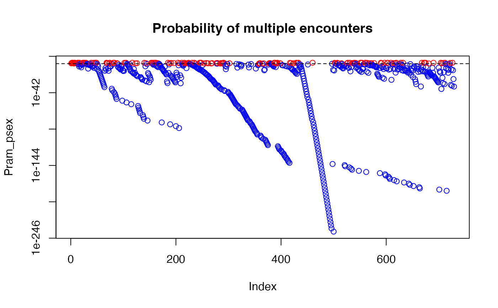

Probability of encountering a genotype more than once by chance
Usage
psex(
gid,
pop = NULL,
by_pop = TRUE,
freq = NULL,
G = NULL,
method = c("single", "multiple"),
...
)Arguments
- gid
a genind or genclone object.
- pop
either a formula to set the population factor from the
strataslot or a vector specifying the population factor for each sample. Defaults toNULL.- by_pop
When this is
TRUE(default), the calculation will be done by population.- freq
a vector or matrix of allele frequencies. This defaults to
NULL, indicating that the frequencies will be determined via round-robin approach inrraf. If this matrix or vector is not provided, zero-value allele frequencies will automatically be corrected. For details, please see the documentation on correcting rare alleles.- G
an integer vector specifying the number of observed genets. If NULL, this will be the number of original multilocus genotypes for
method = "single"and the number of populations formethod = "multiple".Gcan also be a named integer vector for each population ifby_pop = TRUE. Unnamed vectors with a lengths greater than 1 will throw an error.- method
which method of calculating psex should be used? Using
method = "single"(default) indicates that the calculation for psex should reflect the probability of encountering a second genotype. Usingmethod = "multiple"gives the probability of encountering multiple samples of the same genotype (see details).- ...
options from correcting rare alleles. The default is to correct allele frequencies to 1/n
Details
single encounter:
Psex is the probability of encountering a given genotype more than once by chance. The basic equation from Parks and Werth (1993) is
$$p_{sex} = 1 - (1 - p_{gen})^{G})$$
where G is the number of multilocus genotypes and pgen is the
probability of a given genotype (see
pgen for its calculation). For a given value of alpha (e.g.
alpha = 0.05), genotypes with psex < alpha can be thought of as a single
genet whereas genotypes with psex > alpha do not have strong evidence that
members belong to the same genet (Parks and Werth, 1993).
multiple encounters:
When method = "multiple", the method from Arnaud-Haond et al. (1997)
is used where the sum of the binomial density is taken.
$$ p_{sex} = \sum_{i = n}^N {N \choose i} \left(p_{gen}\right)^i\left(1 - p_{gen}\right)^{N - i} $$
where N is the number of sampling units i is the ith - 1 encounter of a given genotype, and pgen is the value of pgen for that genotype. This procedure is performed for all samples in the data. For example, if you have a genotype whose pgen value was 0.0001, with 5 observations out of 100 samples, the value of psex is computed like so:
dbinom(0:4, 100, 0.0001)using by_pop = TRUE and modifying G:
It is possible to modify G for single or multiple encounters. With
method = "single", G takes place of the exponent, whereas
with method = "multiple", G replaces N (see above).
If you supply a named vector for G with the population names and
by_pop = TRUE, then the value of G will be different for each
population.
For example, in the case of method = "multiple", let's say you have
two populations that share a genotype between them. The size of population
A and B are 25 and 75, respectively, The values of pgen for that genotype
in population A and B are 0.005 and 0.0001, respectively, and the number of
samples with the genotype in popualtions A and B are 4 and 6, respectively.
In this case psex for this genotype would be calculated for each population
separately if we don't specify G:
If we specify G = 100, then it changes to:
We could also specify G to be the number of genotypes observed in the population (let's say A = 10, B = 20)
Unless freq is supplied, the function will automatically calculate
the round-robin allele frequencies with rraf and G
with nmll.
Note
The values of Psex represent the value for each multilocus genotype.
Additionally, when the argument pop is not NULL,
by_pop is automatically TRUE.
References
Arnaud-Haond, S., Duarte, C. M., Alberto, F., & Serrão, E. A. 2007. Standardizing methods to address clonality in population studies. Molecular Ecology, 16(24), 5115-5139.
Parks, J. C., & Werth, C. R. 1993. A study of spatial features of clones in a population of bracken fern, Pteridium aquilinum (Dennstaedtiaceae). American Journal of Botany, 537-544.
Examples
data(Pram)
# With multiple encounters
Pram_psex <- psex(Pram, by_pop = FALSE, method = "multiple")
plot(Pram_psex, log = "y", col = ifelse(Pram_psex > 0.05, "red", "blue"))
abline(h = 0.05, lty = 2)
title("Probability of multiple encounters")

# \dontrun{
# For a single encounter (default)
Pram_psex <- psex(Pram, by_pop = FALSE)
plot(Pram_psex, log = "y", col = ifelse(Pram_psex > 0.05, "red", "blue"))
abline(h = 0.05, lty = 2)
title("Probability of second encounter")
 # This can be also done assuming populations structure
Pram_psex <- psex(Pram, by_pop = TRUE, method = "multiple")
plot(Pram_psex, log = "y", col = ifelse(Pram_psex > 0.05, "red", "blue"))
abline(h = 0.05, lty = 2)
title("Probability of multiple encounters\nwith pop structure")
# This can be also done assuming populations structure
Pram_psex <- psex(Pram, by_pop = TRUE, method = "multiple")
plot(Pram_psex, log = "y", col = ifelse(Pram_psex > 0.05, "red", "blue"))
abline(h = 0.05, lty = 2)
title("Probability of multiple encounters\nwith pop structure")
 # The above, but correcting zero-value alleles by 1/(2*rrmlg) with no
# population structure assumed
# Type ?rare_allele_correction for details.
Pram_psex2 <- psex(Pram, by_pop = FALSE, d = "rrmlg", mul = 1/2, method = "multiple")
plot(Pram_psex2, log = "y", col = ifelse(Pram_psex2 > 0.05, "red", "blue"))
abline(h = 0.05, lty = 2)
title("Probability of multiple encounters\nwith pop structure (1/(2*rrmlg))")
# We can also set G to the total population size
(G <- nInd(Pram))
#> [1] 729
Pram_psex <- psex(Pram, by_pop = TRUE, method = "multiple", G = G)
plot(Pram_psex, log = "y", col = ifelse(Pram_psex > 0.05, "red", "blue"))
abline(h = 0.05, lty = 2)
title("Probability of multiple encounters\nwith pop structure G = 729")
# The above, but correcting zero-value alleles by 1/(2*rrmlg) with no
# population structure assumed
# Type ?rare_allele_correction for details.
Pram_psex2 <- psex(Pram, by_pop = FALSE, d = "rrmlg", mul = 1/2, method = "multiple")
plot(Pram_psex2, log = "y", col = ifelse(Pram_psex2 > 0.05, "red", "blue"))
abline(h = 0.05, lty = 2)
title("Probability of multiple encounters\nwith pop structure (1/(2*rrmlg))")
# We can also set G to the total population size
(G <- nInd(Pram))
#> [1] 729
Pram_psex <- psex(Pram, by_pop = TRUE, method = "multiple", G = G)
plot(Pram_psex, log = "y", col = ifelse(Pram_psex > 0.05, "red", "blue"))
abline(h = 0.05, lty = 2)
title("Probability of multiple encounters\nwith pop structure G = 729")
 # Or we can set G to the number of unique MLGs
(G <- rowSums(mlg.table(Pram, plot = FALSE) > 0))
#> Nursery_CA Nursery_OR JHallCr_OR NFChetHigh_OR Coast_OR
#> 30 19 30 35 12
#> HunterCr_OR Winchuck_OR ChetcoMain_OR PistolRSF_OR
#> 4 9 7 2
Pram_psex <- psex(Pram, by_pop = TRUE, method = "multiple", G = G)
plot(Pram_psex, log = "y", col = ifelse(Pram_psex > 0.05, "red", "blue"))
#> Warning: 179 y values <= 0 omitted from logarithmic plot
abline(h = 0.05, lty = 2)
title("Probability of multiple encounters\nwith pop structure G = nmll")
# Or we can set G to the number of unique MLGs
(G <- rowSums(mlg.table(Pram, plot = FALSE) > 0))
#> Nursery_CA Nursery_OR JHallCr_OR NFChetHigh_OR Coast_OR
#> 30 19 30 35 12
#> HunterCr_OR Winchuck_OR ChetcoMain_OR PistolRSF_OR
#> 4 9 7 2
Pram_psex <- psex(Pram, by_pop = TRUE, method = "multiple", G = G)
plot(Pram_psex, log = "y", col = ifelse(Pram_psex > 0.05, "red", "blue"))
#> Warning: 179 y values <= 0 omitted from logarithmic plot
abline(h = 0.05, lty = 2)
title("Probability of multiple encounters\nwith pop structure G = nmll")
 ## An example of supplying previously calculated frequencies and G
# From Parks and Werth, 1993, using the first three genotypes.
# The row names indicate the number of samples found with that genotype
x <- "
Hk Lap Mdh2 Pgm1 Pgm2 X6Pgd2
54 12 12 12 23 22 11
36 22 22 11 22 33 11
10 23 22 11 33 13 13"
# Since we aren't representing the whole data set here, we are defining the
# allele frequencies before the analysis.
afreq <- c(Hk.1 = 0.167, Hk.2 = 0.795, Hk.3 = 0.038,
Lap.1 = 0.190, Lap.2 = 0.798, Lap.3 = 0.012,
Mdh2.0 = 0.011, Mdh2.1 = 0.967, Mdh2.2 = 0.022,
Pgm1.2 = 0.279, Pgm1.3 = 0.529, Pgm1.4 = 0.162, Pgm1.5 = 0.029,
Pgm2.1 = 0.128, Pgm2.2 = 0.385, Pgm2.3 = 0.487,
X6Pgd2.1 = 0.526, X6Pgd2.2 = 0.051, X6Pgd2.3 = 0.423)
xtab <- read.table(text = x, header = TRUE, row.names = 1)
# Here we are expanding the number of samples to their observed values.
# Since we have already defined the allele frequencies, this step is actually
# not necessary.
all_samples <- rep(rownames(xtab), as.integer(rownames(xtab)))
xgid <- df2genind(xtab[all_samples, ], ncode = 1)
freqs <- afreq[colnames(tab(xgid))] # only used alleles in the sample
pSex <- psex(xgid, by_pop = FALSE, freq = freqs, G = 45)
# Note, pgen returns log values for each locus, here we take the sum across
# all loci and take the exponent to give us the value of pgen for each sample
pGen <- exp(rowSums(pgen(xgid, by_pop = FALSE, freq = freqs)))
res <- matrix(c(unique(pGen), unique(pSex)), ncol = 2)
colnames(res) <- c("Pgen", "Psex")
res <- cbind(xtab, nRamet = rownames(xtab), round(res, 5))
rownames(res) <- 1:3
res # Compare to the first three rows of Table 2 in Parks & Werth, 1993
#> Hk Lap Mdh2 Pgm1 Pgm2 X6Pgd2 nRamet Pgen Psex
#> 1 12 12 12 23 22 11 54 0.00004 0.00186
#> 2 22 22 11 22 33 11 36 0.00192 0.08295
#> 3 23 22 11 33 13 13 10 0.00056 0.02483
# }
## An example of supplying previously calculated frequencies and G
# From Parks and Werth, 1993, using the first three genotypes.
# The row names indicate the number of samples found with that genotype
x <- "
Hk Lap Mdh2 Pgm1 Pgm2 X6Pgd2
54 12 12 12 23 22 11
36 22 22 11 22 33 11
10 23 22 11 33 13 13"
# Since we aren't representing the whole data set here, we are defining the
# allele frequencies before the analysis.
afreq <- c(Hk.1 = 0.167, Hk.2 = 0.795, Hk.3 = 0.038,
Lap.1 = 0.190, Lap.2 = 0.798, Lap.3 = 0.012,
Mdh2.0 = 0.011, Mdh2.1 = 0.967, Mdh2.2 = 0.022,
Pgm1.2 = 0.279, Pgm1.3 = 0.529, Pgm1.4 = 0.162, Pgm1.5 = 0.029,
Pgm2.1 = 0.128, Pgm2.2 = 0.385, Pgm2.3 = 0.487,
X6Pgd2.1 = 0.526, X6Pgd2.2 = 0.051, X6Pgd2.3 = 0.423)
xtab <- read.table(text = x, header = TRUE, row.names = 1)
# Here we are expanding the number of samples to their observed values.
# Since we have already defined the allele frequencies, this step is actually
# not necessary.
all_samples <- rep(rownames(xtab), as.integer(rownames(xtab)))
xgid <- df2genind(xtab[all_samples, ], ncode = 1)
freqs <- afreq[colnames(tab(xgid))] # only used alleles in the sample
pSex <- psex(xgid, by_pop = FALSE, freq = freqs, G = 45)
# Note, pgen returns log values for each locus, here we take the sum across
# all loci and take the exponent to give us the value of pgen for each sample
pGen <- exp(rowSums(pgen(xgid, by_pop = FALSE, freq = freqs)))
res <- matrix(c(unique(pGen), unique(pSex)), ncol = 2)
colnames(res) <- c("Pgen", "Psex")
res <- cbind(xtab, nRamet = rownames(xtab), round(res, 5))
rownames(res) <- 1:3
res # Compare to the first three rows of Table 2 in Parks & Werth, 1993
#> Hk Lap Mdh2 Pgm1 Pgm2 X6Pgd2 nRamet Pgen Psex
#> 1 12 12 12 23 22 11 54 0.00004 0.00186
#> 2 22 22 11 22 33 11 36 0.00192 0.08295
#> 3 23 22 11 33 13 13 10 0.00056 0.02483
# }